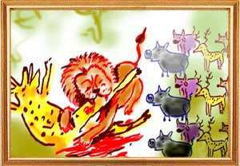
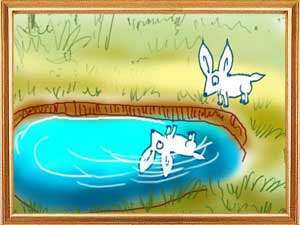
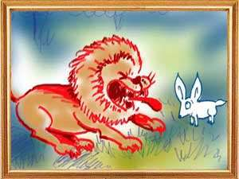
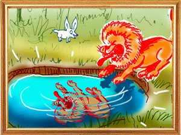

Bhasuraka was a lion lording over the jungle, killing deer, boars, rabbits, bison's, etc. Yet he was not happy with his kill.The victims too were unhappy and met the lion one day in a delegation. “Oh, lord,” they said, “why do you kill so many animals every day when you need only one for your food? Let us come to an understanding. From today, you need not move from your place. We will send an animal every day to you. That will spare you the trouble of hunting and us our lives.”
“Our forebears have said that the duty of the king is to rule and not to destroy. Just as a seed sprouts, grows into a tree and yields fruit, a people protected by the king come to his rescue in times of need.” “What you say is true,” the lion said and added a condition. “If you fail to send one animal every day, I shall kill all of you.”
“Agreed,” said the animals and began roaming the forest without fear and sending one of their own folk to the lion for his lunch. One day it was the turn of a hare. He started leisurely on his last journey and saw a big well on the way and saw his own reflection when he peeped into the well from curiosity. Suddenly an idea struck the hare. “I will somehow tempt the lion to the well and persuade him to jump into it,” the hare thought to himself. It was late in the evening when the hare reached the lion's den. The lion was hungry and so angry and decided to kill all the animals when the hare came and knelt before him.
“First, you are too small for my lunch. Second, you have come late. I shall kill you and all the others too,” the lion warned the hare. “My lord, it is not my fault or the fault of other animals.” “Let me know who it is who delayed you and I will kill him at once.”
“Our folks have decided that it is my turn today. Since I do not make a full meal, they have sent three more hares with me for your meal. As we were all coming to you, a big lion came out of his den and demanded to know where we were all going.” “We are all going to Bhasuraka as his meal according to our arrangement, we said. The big lion said that this jungle belonged to him and that all animals obeyed its orders. He also told us that you are a cheat and asked us to bring you to him for a trial of strength. Whoever is the victor will become the king. He commanded me to summon you to his fort. That's why I am late. It is now for you to decide,” the hare told the lion.
“In that case,” Bhasuraka told the hare, “show me that lion. I will kill him and have him for lunch. According to the elders territory, friendship and gold are the rewards of war. Wise men do not go to war unless there are gains.” “Yes, my lord,” said the hare, “what you say is true. But the big lion lives in a fort. He knows that the king without a fort is like a cobra without fangs and an elephant without heat.”
“Stop that nonsense and bring him here. Don't you know that you have to crush the enemy and disease at the first opportunity? Otherwise, they will grow in strength and crush you.” “But the big lion seems to be very strong. Haven't you heard elders saying that one should not go to war without assessing one's own strength and the strength of the enemy? He who meets the enemy in haste will perish like the locusts in a fire.”
Growing impatient, the lion roared, “why all this tall talk. Show him to me.” Asking the lion to accompany him, the hare took him to the well. He told the lion that the big lion was there in that fort and showed him the well. The lion then peeped into the well and mistaking his reflection in the water for the big lion jumped into the well to kill him. Thus the foolish lion perished and all the animals in the jungle lived happily ever after.